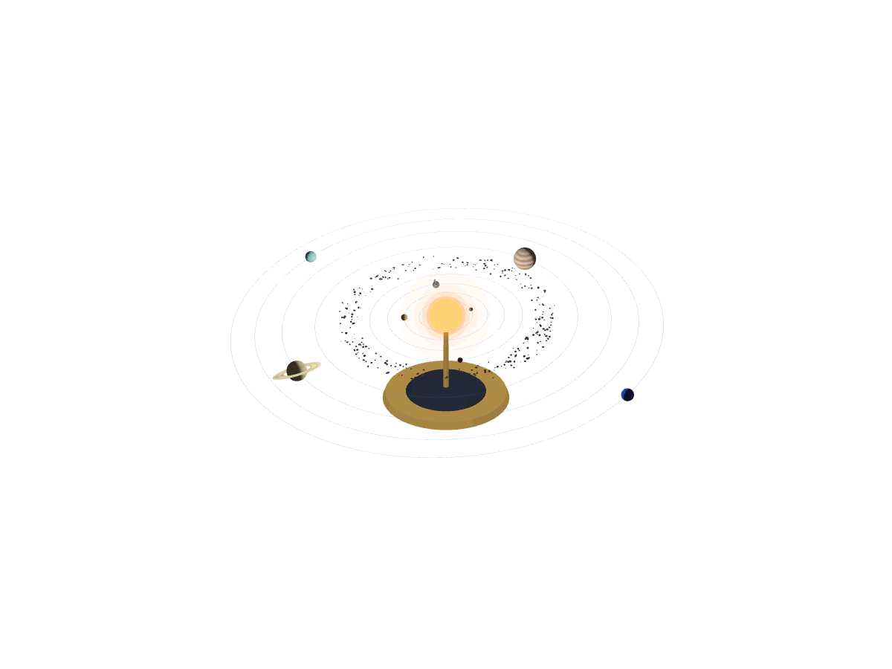
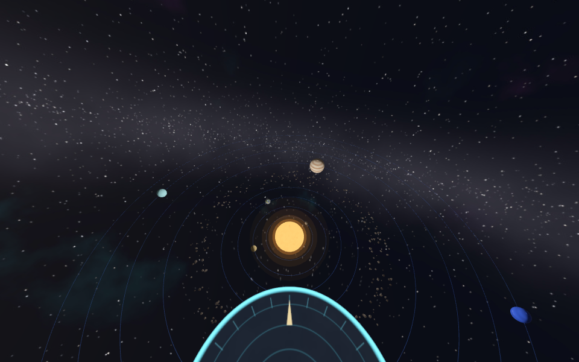

Observation deck
Stand at the edge of the Solar System. Neptune and Uranus sweep past at arm’s length.
A spatial web experience · visionOS 27
The Sun hangs just past your Safari window. Eight planets circle it at waist height — Mercury whips around every twelve seconds while Neptune takes four minutes to sweep past you at arm’s length. Built with nothing but HTML and one USDZ file.

Where to stand
Both decks float in real-world scale, so the one under you sits right on your floor.
Stand at the edge of the Solar System. Neptune and Uranus sweep past at arm’s length.

Float above the plane of the planets and watch all eight orbits at once.
The planets
Orbits are squeezed and planets enlarged so everything fits in a room — the real Neptune is 30 times farther out than Earth. Each planet’s night side faces away from the Sun, and Earth’s cities glow in the dark.
Preview
Not on Vision Pro yet? Drag to look around. The planets move once you step in on the headset.
How it works
Each planet sits in its own spinning transform, keyframed in the USDZ so the whole system loops seamlessly every four minutes. The page only starts, pauses and speeds it up.
<model id="world" src="assets/orbit-room.usdz"
environmentmap="assets/space-light.exr"
autoplay loop style="display: none"></model>
enter.onclick = () => world.requestImmersive();
speed.onclick = () => { world.playbackRate = 8; };
pause.onclick = () => world.paused ? world.play() : world.pause();Or press the Digital Crown at any time.